Session 8
Continuous Evaluation Problems #2 (Memory Management) - Correction
Problem #1 (5p)
Memory management system with 512 Bytes page size, 2 MBytes memory and 1 Byte word size. 4 KBytes maximum segment size. All tables implemented in main memory. Given the following processes:
| Process 1 | Process 2 | |
|---|---|---|
| Procedure A (512 Bytes) | x | x |
| Procedure B (2560 Bytes) | x | |
| Data L (1024 Bytes) | x | x |
xindicates which procedures and data are assigned to each process. A row with 2xmeans shared procedure or data. Each process is formed by a 1 KBytestacksegment. First 50 addresses and all the pair ones are already taken.- Give an example, if possible, that shows which information and its size (in Bytes) that the OS has to store in order to make the address translation of both processes when they are executed inside the CPU for the following memory management systems:
(a) [1.5p] Pagination
(b) [1p] Is possible the Segmentation? Why?
(c) [2.5p] Paged segmentation
Problem #1 (a)
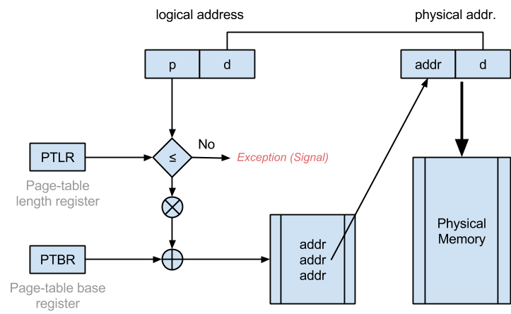
Problem #1 (a)
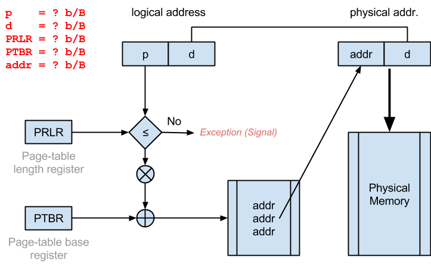
Problem #1 (a)
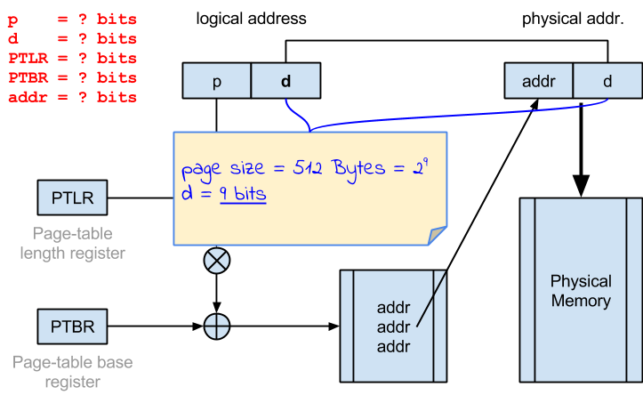
Problem #1 (a)
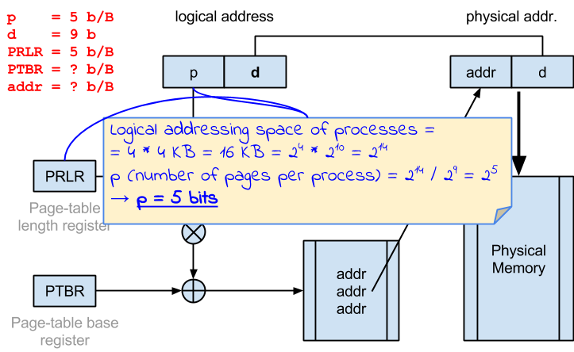
Problem #1 (a)
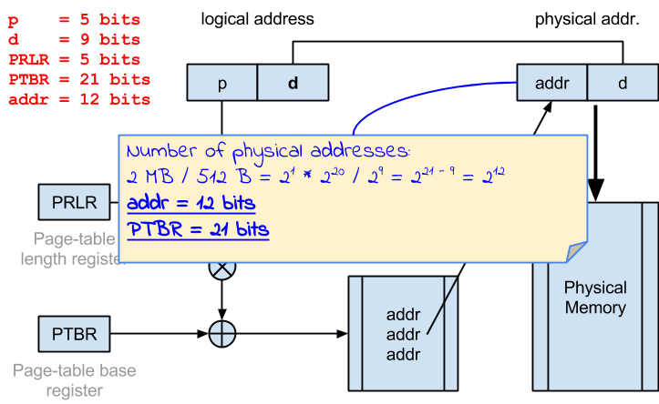
Problem #1 (a)
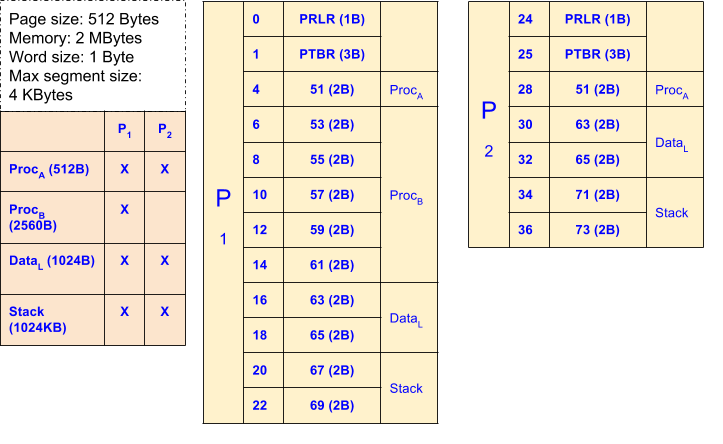
Problem #1 (b)
Is possible the Segmentation? Why?
- No
- The memory space of each segment must be contiguous
ProcBneeds 5 pages (2560 B / 512 B)DataLand thestackneed 2 pages (1024 B / 512 B)- We only have 1 contiguous page (all pairs are already taken)
Problem #1 (c) - Paged segmentation
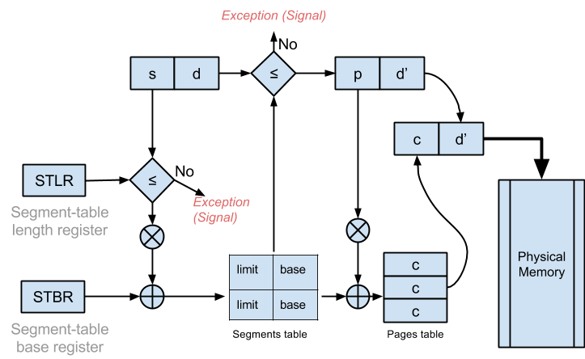
Problem #1 (c) - Paged segmentation
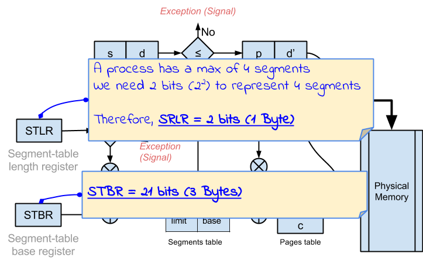
Problem #1 (c) - Paged segmentation
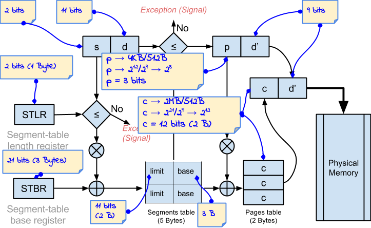
Problem #1 (c) - Paged segmentation
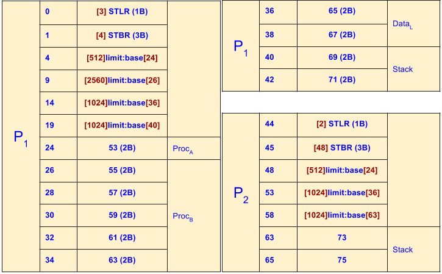
Problem #2 (5p)
Paged segmentation memory management system. 1 KByte page size, 1 Byte word size. A program has at most 3 segments. 8 KBytes maximum segment size. All tables are implemented in main memory.
(a) [1.5p] Which is the logical addresses range for P1 and P2?
(b) [1p] How could P1 and P2 share the address 20 (if possible)?
(c) [2.5p] A new process (P4) is created, with 5 KBytes code size, 5 KBytes data and 1 Kbyte stack. If this process fits into the memory, give an example of how would its segments and pages tables be (OS puts them in address 49). Also give their size in bytes.
Problem #2 (a)
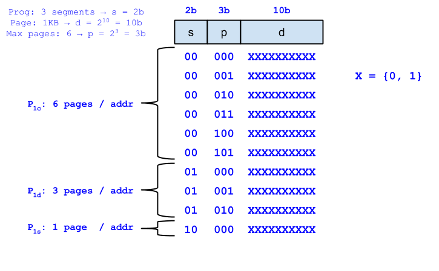
Problem #2 (b)
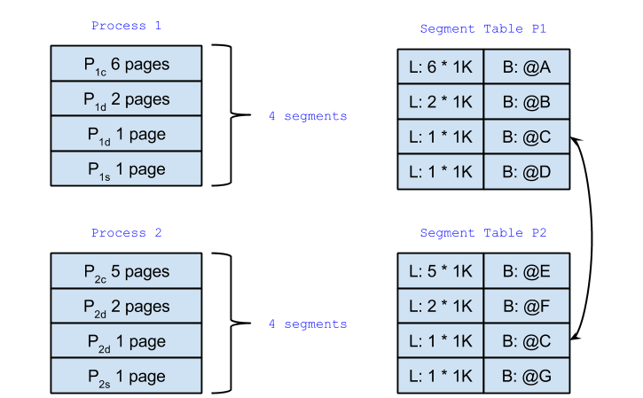
Problem #2 (c)
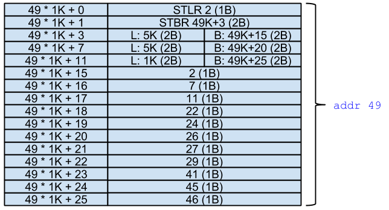
<That's all!>